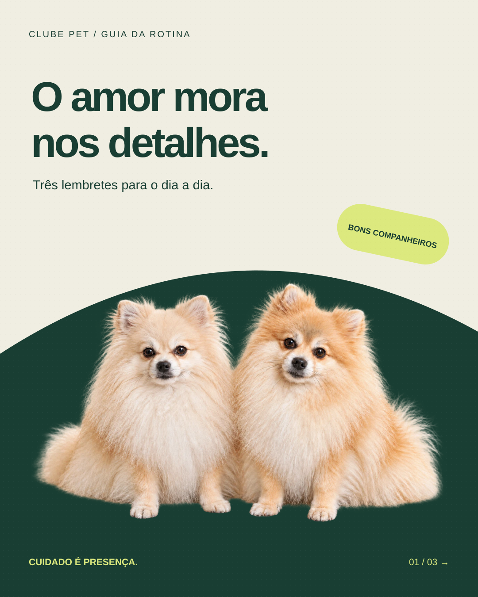
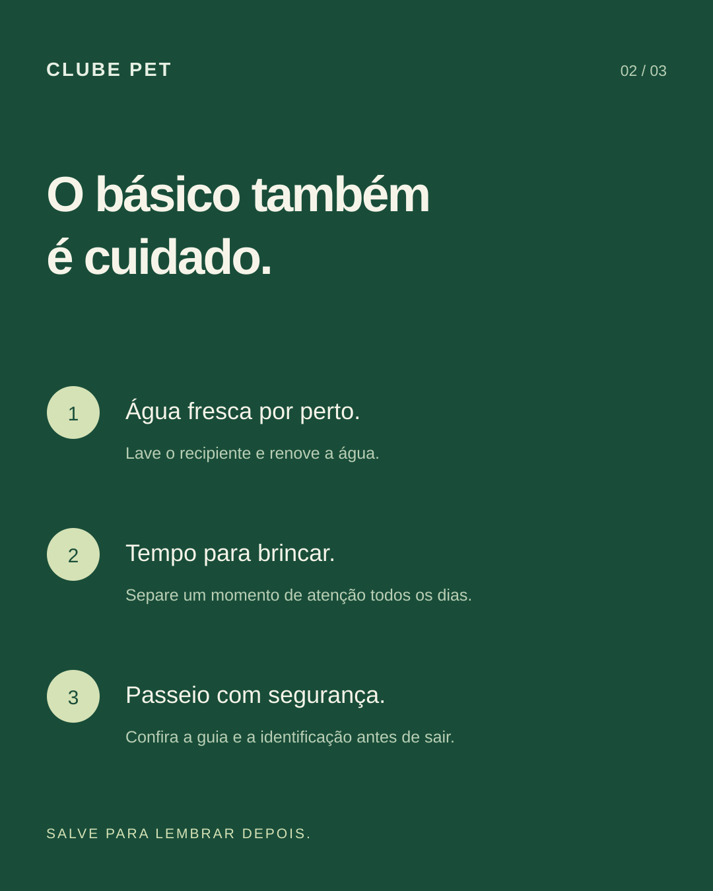
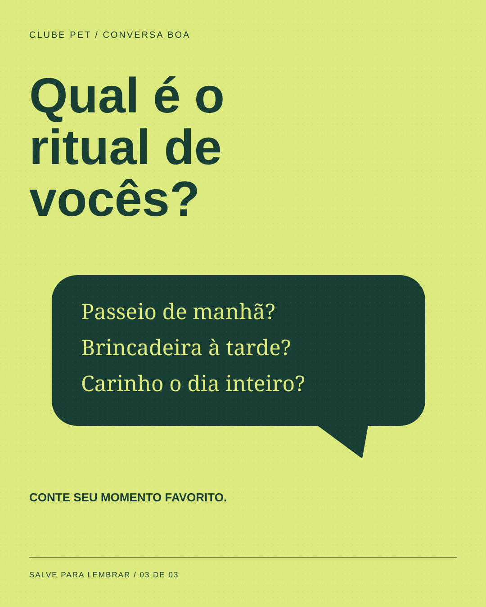

02 / ESTUDO CONCEITUAL
Clube Pet
Cuidado próximo. Comunicação leve.
Criar um carrossel com abertura, conteúdo e convite à interação.
#193E33#DCE97E#F0EEE2
01 / DECISÃO VISUAL
A foto dos dois cachorros de Gustavo aproxima a capa; os cartões numerados facilitam a leitura.
02 / SISTEMA
Verde, lima e títulos fortes mantêm o reconhecimento entre as três telas.
03 / ESCOPO
3 peças conceituais, com SVG editável e PNG. Estudo criado com apoio de IA; sem cliente, produção impressa ou resultados comerciais atribuídos.









Marcas, casais, eventos e preços são fictícios. As aplicações de papelaria e embalagem são representações digitais; não foram produzidas fisicamente.